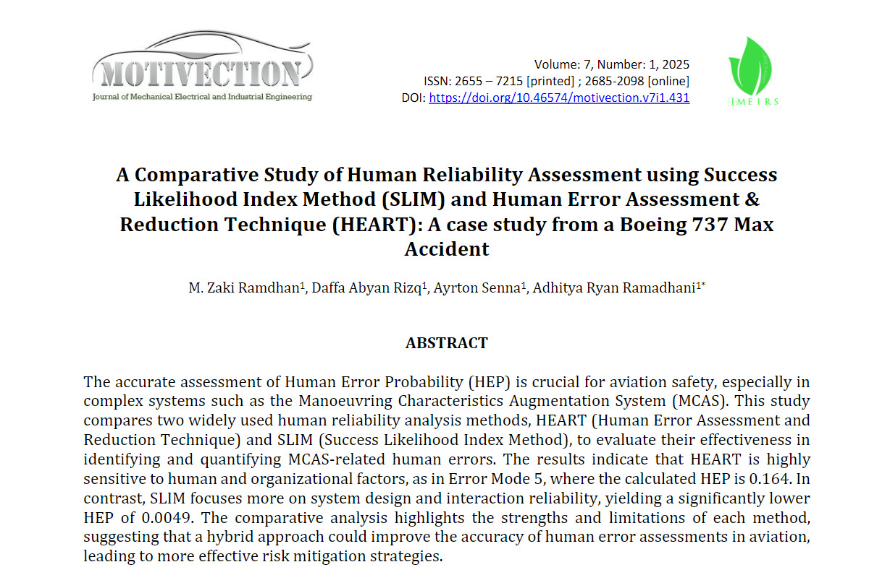
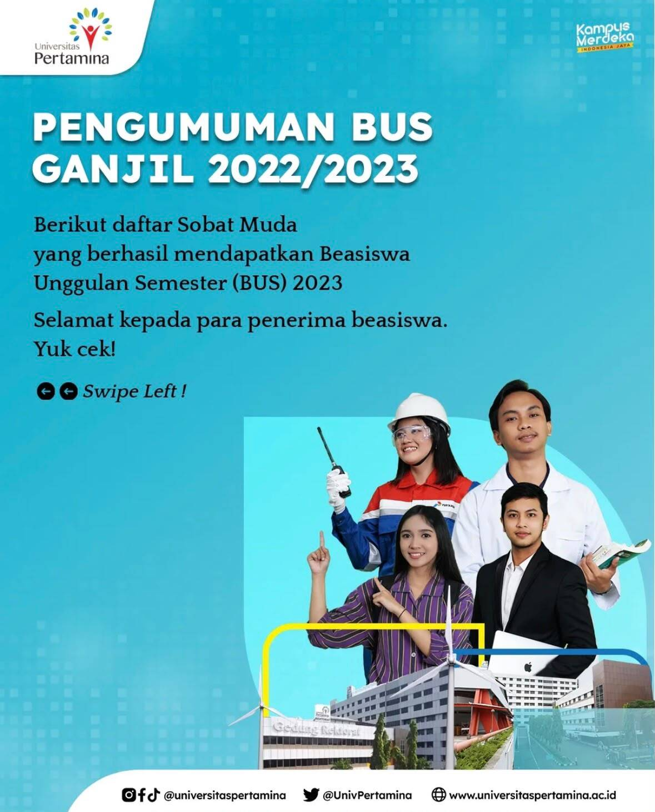
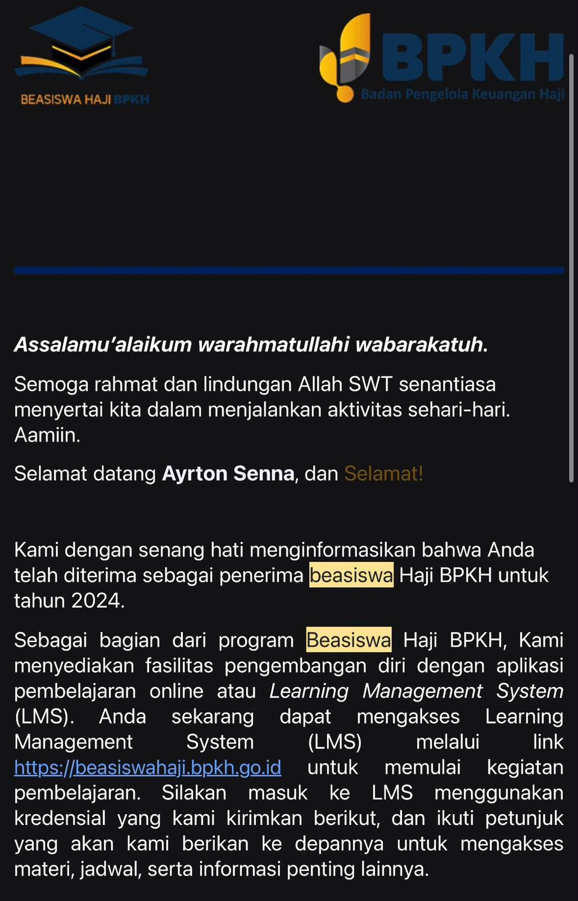
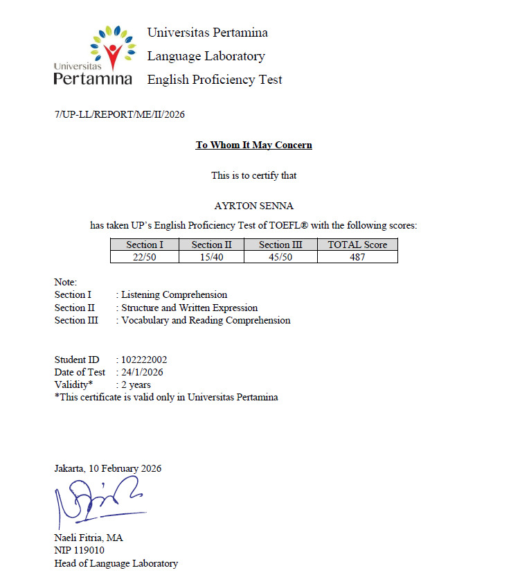
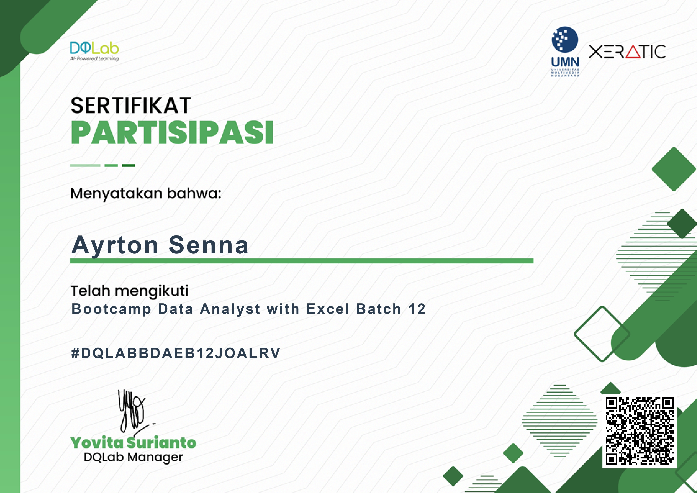

ACHIEVEMENTS
Credentials & Recognition

Research Publication
Motivection Publisher
A Comparative Study of Human Reliability Assessment using SLIM and HEART: A case study from a Boeing 737 Max Accident.

Beasiswa Unggulan Semester (BUS)
2023 & 2026
Awarded academic scholarship from Universitas Pertamina for maintaining excellent academic performance.

Beasiswa Haji BPKH
2024
Recipient of the prestigious BPKH scholarship supporting higher education excellence.

TOEFL ITP
Universitas Pertamina Language Laboratory
Total Score = 487.

Intermediate English Course
LIA
Completed an intermediate English course.

Data Analyst with Excel
DQLab
Completed the data analyst bootcamp.